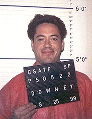

TRIBUTE PAGE
ROBERT DROWNEY JR
Robert John Downey Jr. (born April 4, 1965) is an American actor and producer. His career has been characterized by critical and popular success in his youth, followed by a period of substance abuse and legal troubles, before a resurgence of commercial success later in his career. In 2008, Downey was named by Time magazine among the 100 most influential people in the world, and from 2013 to 2015, he was listed by Forbes as Hollywood's highest-paid actor.

Downey was raised in an artistic household in New York City's Greenwich Village; his father was a noted underground filmmaker who gave the five-year-old Downey his first part. After dropping out of high school in California, Downey returned to New York City to pursue an acting career. Supporting roles in several movies, including the cult hit Weird Science (1985), led to a stint (1985-86) on the television comedy sketch show Saturday Night Live. With his boyish looks and raffish charm, Downey then scored the lead in the romantic comedy The Pick-up Artist (1987) and broke out further with his visceral performance as a cocaine addict in Less Than Zero (1987).
